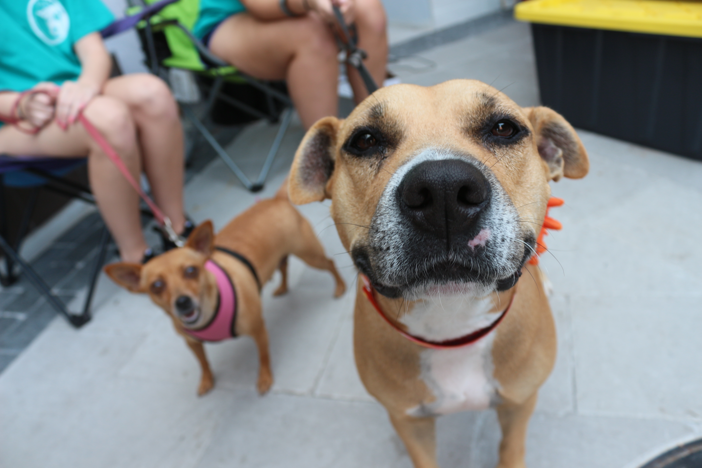

Give the gift of a second chance at life. All donations go to the betterment of our animals and facility. With your donations we are able to provide for and enrich the lives of every fur friend in our care. Words cannot express how grateful we are for your commitment to the welfare of animals in our community.
MONTHLY GIVING
Continuous monthly contributions are
a wonderful way to help us consistently
provide typical health and welfare services
for our animals, as well as maintain our facility.

PLANNED GIVING
Consider supporting Fur Friends
through your estate and leave behind a legacy that will save the lives of countless animals in need from your contribution.
WORKPLACE GIVING
Does your employer have a workplace
giving program? Learn more about how
you can easily make a charitable contribution
directly from your paycheck.
SHELTER WISHLIST
Donate items like toys, hygiene products,
cleaning supplies, food, treats, etc. from our
wishlist that go directly to supporting our day-to-day efforts and ultimately our animals.
We are their voice. Let’s take action to save and protect them.